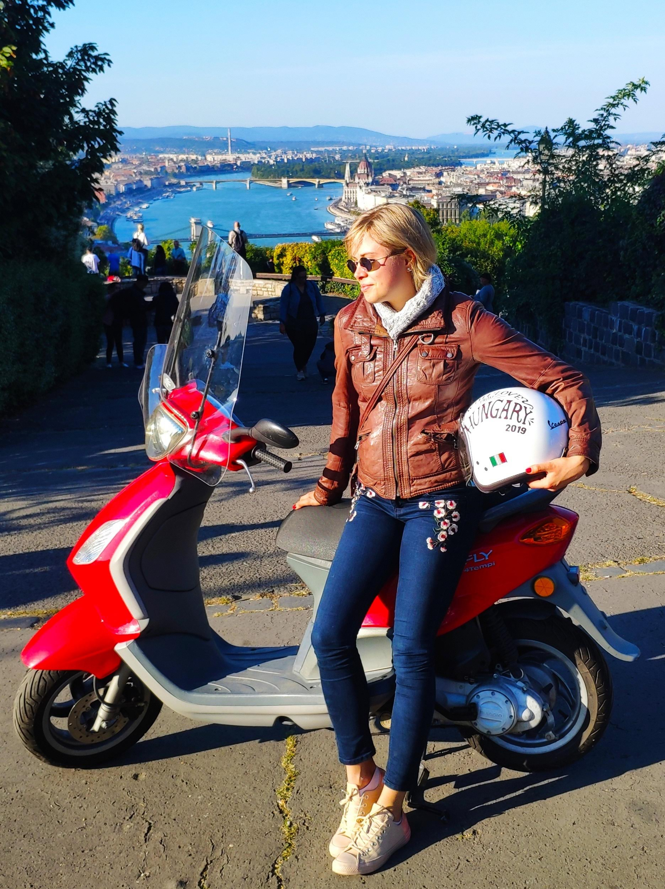

Some fun facts to break the ice...
Click on some fun facts to learn more about me!
I volunteer for Momentum Mozgalom in my freetime.

TizenX delegation in EU Parliament
I won a scholarship as a future leader along with a select few to the European Parliament.
Anna Orosz x2
Me and my name-twin Anna Orosz after successful campaign for the local elections in October 2019.

With EP representative Anna Donáth
European Parliament representative Anna Donath and me in Brussels
I started a STEM initiative in Hungary... and was invited to the national broadcast Klubradio to give an interview about it.
Throughout my high school years, I increasingly grew bothered by the lack of female
representation in
the STEM field. So, I took it upon myself to start a movement to amend the situation.
My goal was to encourage young women in Hungary to pursue a career in STEM fields, currently
dominated
by men. I started an initiative and organized a conference entitled “Science is Woman Thing”
at
𝘌𝘓𝘛𝘌, a leading research university.
I invited distinguished female scientists and engineers to talk about their careers, share
their
wisdom
and serve as role model to the young audience.
Nothing shows the success of the initiative more than the attendance of more than 140
students
from more
than 40 schools. Attendees heard from a Space Research Team Leader, a molecular biologist
researching
the role of protein cells and cancer, a developer of 𝘗𝘳𝘦𝘻𝘪, an IT developer for
𝘔𝘰𝘳𝘨𝘢𝘯-𝘚𝘵𝘢𝘯𝘭𝘦𝘺, and a Biochemical Engineer.
I was honored to be invited to Klubradio, Hungary's first and foremost free-speech public
radio,
to talk about my movement and event.
My American high school wrote an article about the overseas success of their alumna, as well:
Upon receiving word about my success in normalizing STEM for women, my Cincinnati alma mater published the following article about me, an honorary SUA alumna:Former Saint Ursula Academy Student building a better world in Hungary.
If you happen to see a red bike speeding across the city, that is probably me ;)
My favorite pastime is to race through the streets of Budapest on my beloved
Piaggio.

I was an exchange student at the age of 16... and wrote a blog about my year abroad every single day.
In August 2012, I embarked on a journey of a lifetime - I decided to spend a whole year as a foreign exchange student in Cincinnati, Ohio, living with an American family and going to a preparatory Catholic girl school, Saint Ursula Academy.To commemorate the year and share my journey, I wrote a blog about my everyday on Tumblr.
Hungary's premier ML team was interviewed by a Hungarian Youtube celebrity... which is how I ended up in the video, as well.
In January 2018, one of Hungary's most visited Youtube channels interviewed my team on our
work in
the field of Natural Language Processing and the everyday workings of Hungary's leading
Applied
Research Teams.